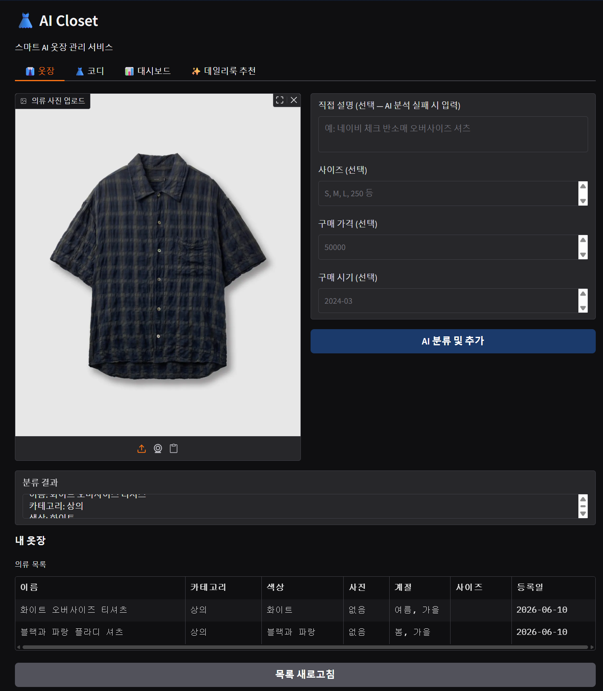

📋 프로젝트 요약 (contents.md)

⚡ 핵심 기능
스마트 옷장 관리
의류 사진을 업로드하면 Florence-2 Vision AI가 카테고리·색상·계절을 자동 분류해 저장합니다. 조회·수정·삭제 모두 지원.
AI 코디 생성
상황(회사·데이트·운동 등)과 계절을 선택하면 Qwen2.5가 옷장의 의류를 조합해 맞춤 코디를 즉시 생성·저장합니다.
데일리룩 AI 추천
"내일 회사에 입고 갈 옷 골라줘" 처럼 채팅하면 Open-Meteo 날씨 데이터 + 저장된 코디를 바탕으로 AI가 최적 코디를 추천합니다.
🔄 AI 처리 흐름
입력
"내일 날씨 보고
회사 코디 추천해줘"
회사 코디 추천해줘"
›
날씨 수집
Open-Meteo API
실시간 기상 정보
실시간 기상 정보
›
AI 추론
Qwen2.5-7B
코디 조합 분석
코디 조합 분석
›
출력
코디 추천 목록
착용 의류 상세
착용 의류 상세
🛠 기술 스택
Qwen2.5-7B-Instruct
Florence-2-base (Vision)
Open-Meteo (날씨 API)
Supabase (PostgreSQL)
Gradio · HF Spaces
LangChain · Transformers
💬 이 프로젝트 어떠세요?
GitHub 계정으로 로그인하면 댓글이 본인 리포의 GitHub Discussions에 자동 저장됩니다.